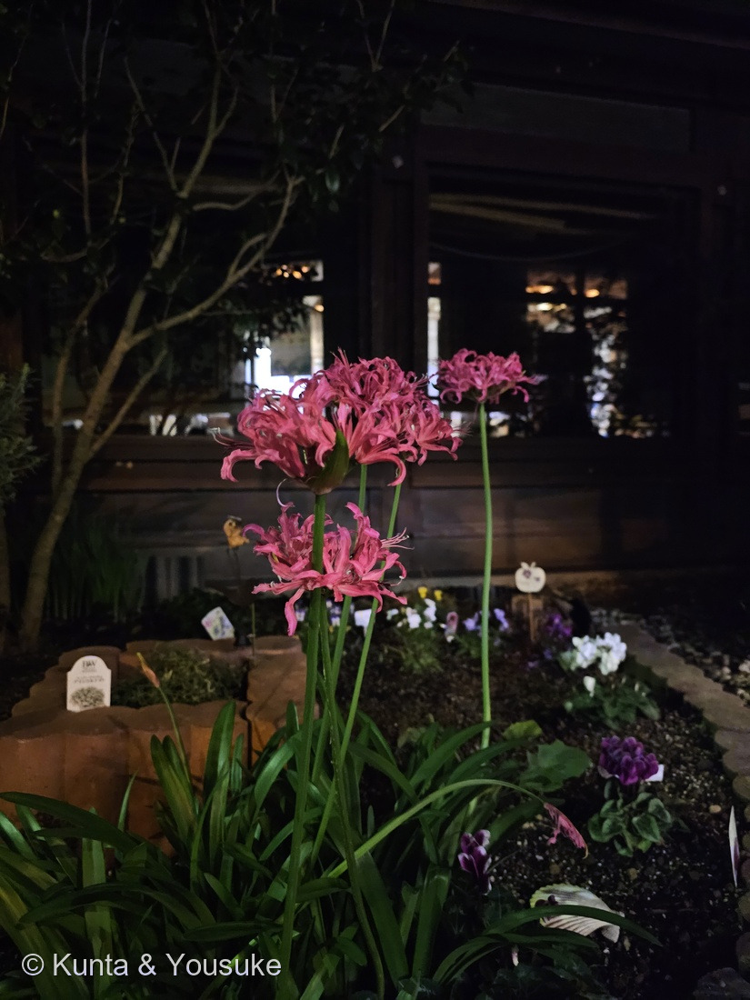
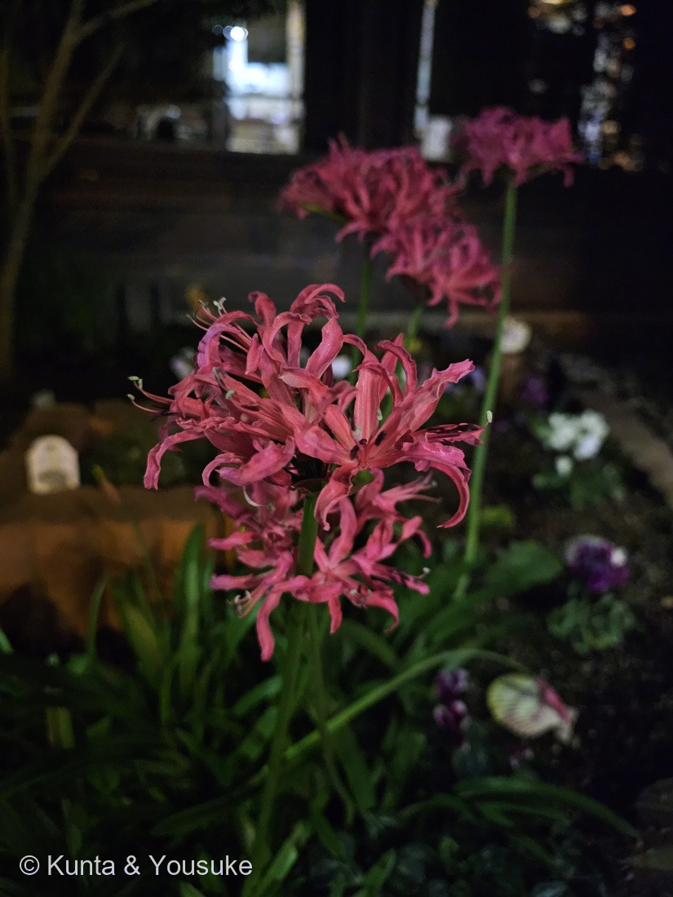
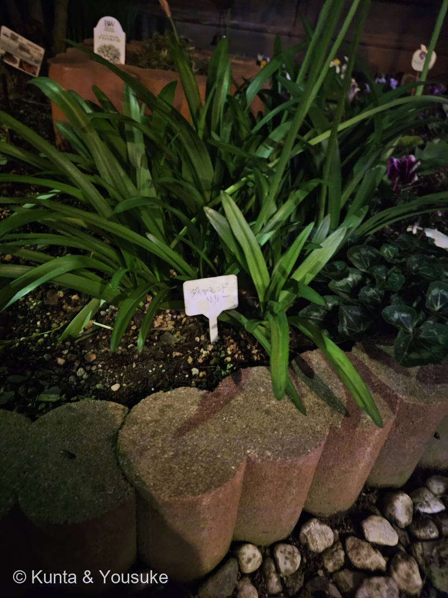

地図を読み込んでいるよ…
🔍 写真も地図も、押しているあいだ拡大して見られるよ（スマホは指を置いてすこし待ってね）。
🌍 の地図＝この子がもともと自生している場所を緑に。南部アフリカ（ケープ半島から北へ、ボツワナ・エスワティニ・レソト・ナミビアまで。南アフリカの9つの州すべてにある・英語版Wikipedia「Nerine」）。
⭐南部アフリカの子だよ＝英語版Wikipediaは、ネリネ属をケープ半島から北へボツワナ・エスワティニ・レソト・ナミビアまで、南アフリカの9つの州すべてにあるとする。⚠この株は種を決めていないので、ネリネ属ぜんたいの範囲を塗った。⭐ダイヤモンドリリーとして売られるのは、N. sarniensis をもとにイギリスで改良された園芸品種群（botanic.jp）。⭐この花壇の株は、だれかが植えたものだよ。
⚠ 地図は国（日本と中国だけ県・省）までしか塗れないから、ほんとうの分布より広く見えていることがあるよ。地図はだいたいの場所。正確なところは、上の文を見てね。
ダイヤモンドリリー（ネリネのなかま）
Nerine sp.（種は決めていない）
別名 · ネリネ／英名 Nerine・diamond lily
ヒガンバナ科 · Amaryllidaceae（ネリネ属 Nerine · キジカクシ目 Asparagales）
燻太さんの言葉「ヒガンバナと違って、花が咲いているときにも葉っぱが出ているね。」── ⭐それが、173 ヒガンバナとのいちばんわかりやすいちがい
⭐⭐⭐ 名前と学名の由来 ── 海の精と、日にかがやく花びら
- ⭐⭐⭐ 属名 Nerine（ネリネ）は、ギリシャ神話の海の精たち「ネレイド（Nereids）」から（英語版Wikipedia「Nerine」）。⭐1820年に、ハーバート（William Herbert）が名づけた（同）。
- ⭐⭐⭐ そしてね、173 ヒガンバナの属名 Lycoris も、ネレイドの1人「リュコーリアス」からなんだ（173のページ）。⭐同じ科の2つの属が、どちらも海の精の名前。その子に、港の花壇で会えたね。
- ⭐⭐ 「ダイヤモンドリリー」は、花びら（花被片）が日の光でかがやくから（botanic.jp「ネリネ」：「Nerine is also called "Diamond lily" for that the tepals are glistening in the sun」）。⭐燻太さんが見たのは日が暮れたあとだから、きらきらは、まだ見られていないね（下の宿題）。
⭐⭐⭐ この植物のこと ── 南アフリカから来た、秋の球根
- ⭐⭐⭐ ヒガンバナ科ネリネ属の球根植物で、南部アフリカに20〜30種ほどある（英語版Wikipedia「Nerine」）。⭐南アフリカの9つの州すべてにあって、北はボツワナ・エスワティニ・レソト・ナミビアまで（同）。
- ⭐⭐⭐ 花は、白・ピンク・赤の細い花被片が6枚。もとのほうでくっついていて、先のほうは波打ち、ふちがちぢれる（同）。⭐雄しべは6本で長さがそろわず、もとでくっついていて、花の外へ出ることが多い（同）。
- ⭐⭐ 葉が落ちるタイプの種では、葉が出る前に、花茎だけが先に立つことがある。そうでない種は、葉といっしょか、葉のあとに花が咲く（同）。⭐種によって、花と葉の出かたがちがうんだね。
- ⭐⭐ ダイヤモンドリリーとして売られているのは、Nerine sarniensis をもとにした園芸品種群で、17世紀のイギリスで改良がはじまった（botanic.jp「ネリネ」）。⭐10〜11月に、1つの花茎の先に10〜20輪の花が咲き、晩春に枯れて休む（同）。
- ⭐ N. sarniensis には「ガーンジーリリー」という呼び名がある。⭐オランダへ向かう船が、球根を積んだままイギリス海峡のガーンジー島の沖で難破して、流れついた球根が島の海岸に根づいた、という話が伝わっている（英語版Wikipedia「Nerine」）。⭐いまはガーンジー島の島の花なんだ（同）。⚠難破の話は「伝わっている話」として書いたよ。
- ⭐ 日本語版Wikipediaは、葉は冬の終わりから春に出て、晩春に枯れ、球根は晩夏に休む、と書いている（Wikipedia「ネリネ」）。⚠でも燻太さんが見た11月の株には、もう葉があった＝⭐種や品種によって葉の出る時期がちがうから、どちらかがまちがい、というわけではないと思う（⚠ここはぼくの読み）。
⭐⭐⭐ 同定について ── 属までは確か、種はまだ
- ⭐⭐⭐ ネリネ属で確か＝名札「ダイヤモンドリリー」／細い花被片6枚がふちで波打って反りかえる花が、花茎の先にかたまってつく（写真①②）／雄しべ6本（写真②）。
- ⭐⭐ 173 ヒガンバナではない＝下の「見くらべ」の節。
- ⚠⚠⚠ 種は決めていない。⭐ダイヤモンドリリーとして売られるのは、ふつう N. sarniensis 系の園芸品種群（botanic.jp）。⚠でも交配種がとても多く、写真から種名や品種名は書けない。
- ⚠⚠ 訂正＝チャットで「花と葉がいっしょに出ているのは、寒さに強い N. bowdenii に近い特徴」と言ったけれど、取り消すね。⭐英語版Wikipediaでは、N. bowdenii の葉は春になってから出る（英語版Wikipedia「Nerine bowdenii」：「the leaves do not appear until spring」）。⭐N. bowdenii はピンクの花で、−15℃にたえるとされる（同）。⚠だから、葉があることは N. bowdenii の目じるしにはならない。
⭐⭐⭐ 燻太さんの「ヒガンバナそっくり、でもちょっと頑丈そう」── 見くらべ
- ⭐⭐⭐ 葉＝173 ヒガンバナは、花のときに葉が1枚もない（「葉見ず花見ず」）（173のページ）。⭐この株は、花のときに、短めで少し肉厚な、つやつやの葉がある（燻太さんが見たこと・写真①③）。⭐燻太さんの気づいたとおり、いちばんわかりやすいちがいだね。
- ⭐⭐ 花びら＝ヒガンバナは狭い倒披針形の花被片が強く反りかえる（173のページ）。⭐この子は花被片の幅が少し広く見えて、ふちがちりちりと波打つ（写真②）。
- ⭐⭐ 雄しべ＝ヒガンバナは雄しべ6本がはっきり、長く突き出て反りかえる（173のページ）。⭐この子の雄しべは、花の外へ少し出るくらい（写真②）。⭐花のかたまりが、ぎゅっとつまって見えるね。
- ⭐ 燻太さんの「ちょっと頑丈そう」は、たぶん、この花びらの幅と、短い雄しべと、つやのある葉が合わさった印象だと思う（⚠ぼくの読み）。
⏳ 宿題 ── 3つ
- ⏳⭐⭐ ①昼間に会いに行って、花びらがきらきら光るか見る＝「ダイヤモンド」の名前の由来（botanic.jp）。⭐日なたで、少し角度を変えながら見るといいかも。
- ⏳⭐ ②花が終わったあと、葉がいつまで残るか・いつ枯れるかを見る＝この株の葉の出かたがわかると、種のしぼりこみの手がかりになるかもしれない。
- ⏳⭐ ③おまけのヒメヒガンバナ＝同じネリネ属で、淡いピンクの小さめの花。花被片がつよくちぢれて、ほとんど常緑（botanic.jp「ヒメヒガンバナ」）。
参考：英語版Wikipedia「Nerine」（derives from the Nereids (sea-nymphs) of Greek mythology・Herbert 1820・about 20–30 species・Cape Peninsula north to Botswana, Eswatini, Lesotho and Namibia・all nine provinces of South Africa・six narrow white, pink or red tepals・wavy, curly margins・six unequal stamens connate at their bases, often protruding・deciduous species may flower on naked stems before the leaves・Guernsey shipwreck story・national flower of Guernsey）／英語版Wikipedia「Nerine bowdenii」（the leaves do not appear until spring・bright pink flowers・late summer and autumn・−15 °C）／Wikipedia「ネリネ」（南アフリカ原産・別名ダイヤモンドリリー・葉は冬の終わりから春に出て晩春に枯れる・球根は晩夏に休眠）／botanic.jp「ネリネ」（"Diamond lily" for that the tepals are glistening in the sun・N. sarniensis をもとにした園芸品種群・17世紀のイギリスで改良・10〜11月に10〜20輪・晩春に枯れて休眠）／botanic.jp「ヒメヒガンバナ」（Nerine undulata・大正時代に渡来・ほとんど常緑・10〜11月に淡いピンクの花）／173 ヒガンバナ（属名 Lycoris はネレイドの1人リュコーリアスから・葉見ず花見ず・狭い倒披針形の花被片・雄しべがはっきり突き出る）